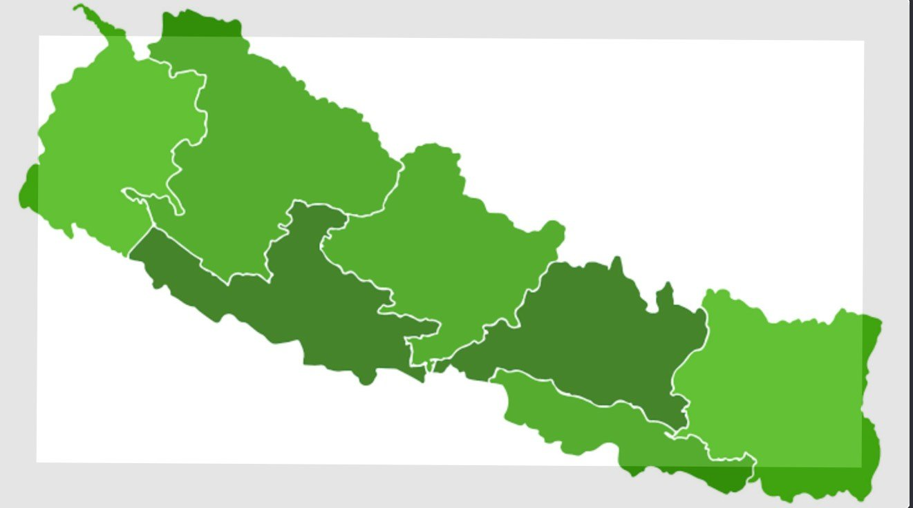

Clinical Trials & Oncology
Biostatistical methods for clinical trial research with a focus on oncology studies, biomarker-informed designs, and predictive marker validation.
Biostatistics · Epidemiology · Data Science
Biostatistics PhD Candidate & Research Assistant
Applying statistical modeling, survival analysis, clinical trial methods, and reproducible programming to healthcare and biomedical research — bridging rigorous methodology with real-world clinical impact.
🇳🇵 Nepal

I am a Biostatistics PhD candidate and research assistant at the University of Louisville, with graduate training spanning biostatistics, statistics, and computational mathematics. My work sits at the intersection of rigorous statistical methodology and real-world healthcare impact.
I work with clinical and healthcare data using survival analysis, regression modeling, study design, statistical programming (SAS, R, Python, SQL), and reproducible reporting — with a particular passion for oncology clinical trials, biomarker-informed designs, and FDA-aligned statistical practice.
I welcome research collaboration, oncology statistical consulting, and FDA regulatory submission support inquiries. Whether you need statistical analysis plans, manuscript support, or clinical trial design expertise — I am here to help.

Ram Chandra Dhungana
PhD Candidate, Biostatistics
Biostatistical methods for clinical trial research with a focus on oncology studies, biomarker-informed designs, and predictive marker validation.
Cox proportional hazards models, Kaplan-Meier methods, regression modeling, hypothesis testing, and interpretable statistical summaries.
Statistical programming, data cleaning, reproducible reporting, and clear communication of methods, limitations, and practical implications.
Supervised and unsupervised learning, predictive modeling, model validation with scikit-learn, and data-driven decision making in clinical research.
Claims-based cohort construction, follow-up/readmission outcomes, rural stratification, and reproducible statistical reporting for applied health services research.
SAS · R · SQLPower and sample size reasoning for continuous, binary, survival, correlation, non-inferiority, and ANOVA settings with transparent assumptions.
Study DesignClear statistical communication through tables, figures, Quarto/LaTeX documents, and code-driven workflows designed for research collaboration.
R Markdown · QuartoSatyal, D., Pradhan, B. L., Poudyal, N., Dhungana, R. C., & Pyakurel, A.
Management Review: An International Journal, 20(2), 63–80
Pradhan, B. L., Satyal, D., & Dhungana, R. C.
International Journal of Operational Research Nepal, 13(1), 1–13
University of Louisville
GPA: 3.89 · Dean's Scholar Certificate
Sam Houston State University
GPA: 3.67 · Outstanding Student of Statistics · Full Scholarship
University of North Carolina at Greensboro
GPA: 3.57
University of Louisville
Current Role
Sam Houston State University
Aug 2020 – May 2022
Dallas Independent School District
Aug 2022 – Aug 2023
Expert biostatistical support for oncology clinical and translational research — from study conception through final analysis, including survival endpoints, biomarker validation, and tumor response models.
OncologyStatistical sections for IND, NDA, BLA, and sNDA submissions — including SAPs, TLF shells, CDISC SDTM/ADaM-ready analysis datasets, and integrated summaries of efficacy and safety (ISE/ISS).
FDA · RegulatoryPhase I / II / III trial design, sample size and power calculations, randomization schemes, adaptive trial frameworks, and protocol statistical section development.
Trial DesignReproducible SAS, R, and Python programs for data cleaning, CDISC formatting, exploratory analysis, and production-quality tables, listings, and figures (TLFs) for regulatory and academic use.
SAS · R · PythonDrafting and reviewing Statistical Analysis Plans (SAPs), methods sections, results sections, and supplementary materials for peer-reviewed publications in biomedical and clinical journals.
Academic WritingOne-on-one tutoring in biostatistics, statistics, and mathematics for graduate and undergraduate students — covering coursework, dissertation chapters, thesis defense preparation, and qualifying exams.
TutoringAn interactive suite of 10 statistical calculators for preliminary planning, education, and clinical research design support. Enter parameters and review results instantly.
✦ Select a test type · Enter parameters · Get instant results ✦
⚠ Planning and education only. For protocols, grants, publications, or regulatory work, verify assumptions and calculations using R, PASS, nQuery, EAST, or a qualified biostatistician.
A fast browser-based statistics toolkit for critical values, distribution probabilities, p-values, confidence intervals, descriptive statistics, exact discrete probabilities, and AUC/ROC calculations. Select a tab, enter numbers, and calculate instantly — no R code required.
Compute left-tail, right-tail, two-tail, area between bounds, and critical values. Equivalent to common uses of pnorm() and qnorm().
Compute t p-values and critical t values. Equivalent to pt() and qt().
Compute right-tail chi-square p-values and critical values. Equivalent to pchisq() and qchisq().
Compute F p-values and critical F values. Equivalent to pf() and qf().
Exact probability, cumulative probability, and right-tail probability for common discrete distributions.
Paste numbers separated by spaces, commas, or new lines. The calculator ignores non-numeric text.
Quick CIs for one mean and one proportion using common textbook formulas.
Convert common test statistics to p-values without typing code. Includes z, t, χ², F, and Pearson correlation tests.
Paste ROC coordinates as FPR,TPR pairs. The calculator sorts by FPR and computes trapezoidal AUC.
This browser calculator is designed for quick table lookups, p-values, areas, and educational/research planning checks. For manuscripts, protocols, regulatory submissions, or complex modeling, verify results using R, SAS, Python, PASS, nQuery, EAST, or a qualified biostatistician.
For research collaboration, statistical consulting, FDA regulatory support, or academic inquiries — send a message below or reach out directly.